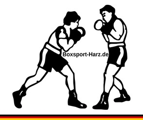

| Gewichtsklassen Profi - Männer | ||
|---|---|---|
| Klasse | Gewichtsobergrenze | |
| in kg | in Pfund | |
| Minifliegengewicht (IBF/WBO) | 47,627 kg | 105 lbs |
| Strohgewicht (WBC) | ||
| Minimumgewicht (WBA) | ||
| Leichtfliegengewicht (WBA/WBC) | 48,988 kg | 108 lbs |
| Juniorfliegengewicht (WBO/IBF) | ||
| Fliegengewicht | 50,802 kg | 112 lbs |
| Superfliegengewicht (WBA/WBC) | 52,163 kg | 115 lbs |
| Juniorbantamgewicht (WBO/IBF) | ||
| Bantamgewicht | 53,524 kg | 118 lbs |
| Superbantamgewicht (WBA/WBC) | 55,338 kg | 122 lbs |
| Juniorfedergewicht (WBO/IBF) | ||
| Federgewicht | 57,153 kg | 126 lbs |
| Superfedergewicht (WBA/WBC) | 58,967 kg | 130 lbs |
| Juniorleichtgewicht (WBO/IBF) | ||
| Leichtgewicht | 61,235 kg | 135 lbs |
| Superleichtgewicht (WBA/WBC) | 63,503 kg | 140 lbs |
| Juniorweltergewicht (WBO/IBF) | ||
| Weltergewicht | 66,678 kg | 147 lbs |
| Superweltergewicht (WBA/WBC) | 69,853 kg | 154 lbs |
| Juniormittelgewicht (WBO/IBF) | ||
| Mittelgewicht | 72,575 kg | 160 lbs |
| Supermittelgewicht | 76,204 kg | 168 lbs |
| Halbschwergewicht | 79,379 kg | 175 lbs |
| Cruisergewicht (WBA/WBC/IBF) | 90,718 kg | 200 lbs |
| Juniorschwergewicht (WBO) | ||
| Bridgerweight (nur WBC) * | 101,605 kg | 224 lbs |
| Schwergewicht | > 90,718 kg (WBC: > 101,605 kg) | > 200 lbs (WBC: > 224 lbs) |
* Bridgerweight (bis 101,6 kg / 224 lbs) wurde 2020 vom WBC eingeführt. Nicht alle Verbände nutzen diese Klasse: IBF und WBO führen sie nicht, die WBA hat sie zum 30.06.2026 abgeschafft. Die Gewichtsgrenzen werden in Pfund festgelegt; die kg-Werte sind umgerechnet (1 lb = 0,45359237 kg). Quellen: WBC – Divisions in professional boxing, WBA (30.06.2026).
| Gewichtsklassen Profi - Frauen | ||
|---|---|---|
| Klasse | Gewichtsobergrenze | |
| in kg | in Pfund | |
| Minimumgewicht | 46,266 kg | 102 lbs |
| Juniorstrohgewicht | ||
| Strohgewicht | 47,627 kg | 105 lbs |
| Minifliegengewicht | ||
| Juniorfliegengewicht | 48,988 kg | 108 lbs |
| Fliegengewicht | 50,802 kg | 112 lbs |
| Superfliegengewicht | 52,163 kg | 115 lbs |
| Juniorbantamgewicht | ||
| Bantamgewicht | 53,524 kg | 118 lbs |
| Superbantamgewicht | 55,338 kg | 122 lbs |
| Juniorfedergewicht | ||
| Federgewicht | 57,153 kg | 126 lbs |
| Superfedergewicht | 58,967 kg | 130 lbs |
| Juniorleichtgewicht | ||
| Leichtgewicht | 61,235 kg | 135 lbs |
| Superleichtgewicht | 63,503 kg | 140 lbs |
| Juniorweltergewicht | ||
| Weltergewicht | 66,678 kg | 147 lbs |
| Superweltergewicht | 69,853 kg | 154 lbs |
| Juniormittelgewicht | ||
| Mittelgewicht | 72,575 kg | 160 lbs |
| Supermittelgewicht | 76,204 kg | 168 lbs |
| Halbschwergewicht | 79,379 kg | 175 lbs |
| Schwergewicht | > 79,379 kg | > 175 lbs |
